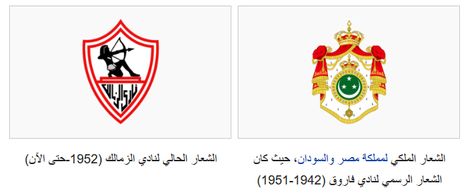

History of the club
Nile Palace and Mixed Club (1911-1941)
Zamalek Club was founded at the beginning of the second decade of the twentieth century, January 5, 1911, where it was established as a club (sports, cultural and social), in the name of the Nile Palace Club, because the headquarters of the club was occupying the place (River Casino) current city of the island, assumed the President of the mixed courts George Merzbach In Egypt at the time the presidency of the club.
In 1913, the club moved to a second headquarters at the intersection of the 26th of July and Ramses Street in a place of buildings (the real estate month and the High Court of Justice) and changed its name to mixed after the mixed courts, one of which was "Saad Zaghloul" the pioneer of the Egyptian national movement.
Farouk club (1941 - 1952)
The club's name was changed back to Farouk in 1941 after the club received the royal patronage of Egypt's King Farouk I.
Zamalek Club and the Post Revolution Period
With the revolution of July 23, 1952 the name changed a third time to his final name, the club Zamalek and moved to the area of the dead engineers, on the Arab League Street, Tersana Club is located opposite Zamalek Club in the same area.
In 1916, the idea of the Royal Cup began as a competition for Egyptian and Allied weapons clubs. And prove the existence of the Egyptians,Then the clubs (Zamalek and Al-Ahly) started not only to agree on the resistance of foreigners, but also agreed to compete between them. 2 March 1917 Zamalek won 0/1.
In 1954, the idea of renovating the club's stadium was emerging due to the poor state of the current stadium at the time. This led to the search for a businessman to take control of the club and thus assist in the renovation of the stadium. Abdulhamid al-Shawarbi assumed the presidency, and although he was elected for a second term, he was unable to do the job he wanted. At that time, some prominent personalities of Zamalek and believers such as General Haidar Pasha and Hajj Sayyid Al-Anani contributed to making the VIPs and the first class affiliated to the club in a way that suits the club's high position. All this happened while Abdelhamid El Shawarby was outside Egypt,So when he came back. He resigned without the help of the club on any side, the board of directors continued and Shawki continued his position (having faithfully left the presidency) to continue until September 1955. The idea of bringing a businessman to help the club remained, and therefore, the famous businessman Abdul Latif Abu Rujaila came as the club's president. 1956 where by then, the rules were changed allowing the board to stay for 3 years. Once again, Dr. Shawki retreats to the new businessman. Although he was re-elected president of the club and all for the prosperity of the club.
Generation of the sixties, seventies and eighties
But the club continued to look for another businessman, and Alawi Al Jazzar came as president and was the owner of Sheikh Shireb, as well as the chairman of the Coca-Cola Company at the time. Although he was president only for a short time, he managed to bring Real Madrid at his own expense in 1961 to play against Zamalek. But he lost his property because of government rules and left Egypt. In 1962, a new Board of Directors came with Eng. Hassan Amer as Chairman and Honorary Deputy to Dr. Mohamed Shawky, Mohamed Latif, Jalal Kritam, Mahmoud Imam and Mahmoud Hafez. Hassan Amer remained Chairman until the defeat of the Egyptian Army in 1967.Minister of Youth and Sports Talaat Khairy decided that the councils of the club would be appointed instead of being elected. He remained in the presidency until July 1971, when the rules re-allowed the administrative board to come to elections and not to allow anyone to become president if that person held two successive presidencies. Then came Tawfiq al-Kheshen, who took over the presidency of the Council, and was awarded the honorary presidency of Mohamed Hassan Helmy. In 1973, Mohamed Hassan Helmy was elected to become president, and he remained chairman of the council until 1984, during which time he was constantly elected president of one of Egypt's largest clubs.Engineer Hassan Amer came in 1984 and Engineer Hassan Aboul Fotouh in 1988. During this period a new rule came from the Ministry of Youth by increasing the number of elected board members to ten which were removed again in 1990. Engineer Hassan Aboul Fotouh assisted in Building many of the club's new building, which is one of the largest buildings in the Middle East, has also increased funding for most of the club's sports teams, helping win many tournaments during its time.
Current period
In 1990, Jalal Ibrahim came and became president of the club due to the death of engineer Hassan Aboul Fotouh. This provisional council was held until September 1990 when the general meeting of the club was held with its election. Eng. Mohamed Nour El-Daly became chairman of the new council until 1992. Since the rules have changed at the time, the Deputy Treasurer will often be selected by the Board of Directors, Hamada Imam was chosen by default for that position, while Abdul Hamid Shahin was elected to the position of Treasurer.The members of the Council consisted of: Ahmed Shereen Fawzi, Mahmoud Maarouf, Mohammed Fayez Al-Zomor, Raouf Jasser and Tarek Ghoneim. According to the rules, it was also new to have two members of the council under the age of 30 and then Sami Abulkhair and Ehab Ibrahim were elected. As for the members appointed by the Higher Committee for Youth and Sports, Dr. Mohamed Amer, General Hanafi Riad, and Farouk Abou El-Nasr were added to the Council. By 1994, Abdelhamid Chahine was unable to continue his duties because of his illness, but the council chose to keep him in honor of his dedication to the club, so Farouk Abou El Nasr was appointed to perform duties while keeping Abdelhamid Chahine in office. In 1995,Changes were made to the Board of Directors due to the cancellation by the Court of four Board members due to their absence from Board meetings for 6 times. These members were Mahmoud Marouf, Mohammed Fayez Al-Zomor, and Dr. Mohammed Amer. The newly appointed members were Morteza Mansour, Mohammed Abdullah, Munir Hassan, and Ibrahim Latif. The Higher Committee for Youth and Sports continues to object to linking the appointed members to the elected teams. As a surprise, the newly appointed members of the club board were Dr. Mohamed Amer and Farouk Abou El Nasr to support their abilities and dedication. As a result,Dr. Shereen Fawzi was selected to be the Treasurer until the new elections. On Thursday, July 4, Dr. Abdel Moneim Amara's decision to release the club council and the Egyptian Football Federation Council came after the sadness of the fall in the match between Ahli and Zamalek for the 95/96 season, where the Council decided to freeze football activity in the club. A temporary club council was chosen for one year, of which Dr. Kamal Darwish was its chairman. To the Fund.Zamalek was the best club in the world by IFFHS in February 2003. It was also the first Egyptian team to qualify for the FIFA Club World Cup in 2001, which was not completed due to funding problems. President of the club from 92 to 96 was Galal Ibrahim and from 96 to 2005 was Kamal Darwish and from 2005 Chancellor Mortada Mansour
Outfit and logo
Zamalek is known for its steady primary colors, which have not changed throughout the club's history since 1911, where it features a white robe with two parallel red lines. The white shirt symbolizes the team's peace, while the red lines mark the struggle for victory.
The secondary color of the sports teams changes with the design of the clothing company, ranging from dark blue "dark blue" to black and green.In 1941, the royal emblem of the Kingdom of Egypt and Sudan was the official logo of the club. Mixed on Al-Ahli with the largest result in the history of the meeting of the two teams (6-0), which was attended by the King at the Stadium of the Union Army The name and logo of the club were changed after the coup against the monarchy in Egypt following the revolution of July 23, 1952;The Zamalek club used its main colors reflecting peace and struggle that have not changed since its establishment.While the logo was used as the color of peace, the background was surrounded by two red lines because it is the symbol of the struggle for victory. In the upper half of the slogan, Rami shares the arrow, aiming at the goal wearing a pharaonic uniform as a sign of the common goal between him and Zamalek club.This slogan is meant to express belonging to Egypt and pride in the Egyptian civilization.It also indicates that the club's goal is always to achieve victory. Rami Arrow seeks to hit the goal and also the Royal Club, which has a goal to achieve against the competitors in the stadium.
